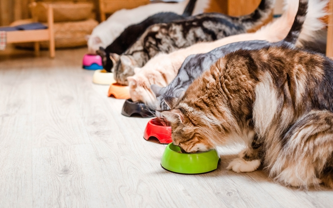

Что нужно знать, прежде чем завести мейн-куна
Порода Мейн-кун появилась на северо-востоке США в штате Мэн. Одна из популярных версий происхождения породы говорит о связи с енотами – отсюда и вторая часть названия. Еще одна точка зрения гласит, что кошки мейн-кун произошли от рыси. Аргумент в пользу этой версии – характерные кисточки на ушах животного. Но исследователи пришли к выводу, что порода вывелась естественным путем – эволюцией. А характерные признаки сформировались под влиянием условий среды обитания: размеры и пушистая шерсть необходимы в холодной местности. Первоначально мейн-куны заводились фермерами для охраны урожая от грызунов. В конце XIX века порода стала популярной на всей территории США, а затем распространилась по миру. Енотоподобные кошки имеют мощный корпус и пышный хвост. Особи мейн-куна мужского пола могут достигать 10-12 кг, а кошечки дорастают до 6-7 кило.

Характер кошек мейн-кун
Мейн-кун – одна из самых красивых и крупных кошек. Она прославилась благодаря кошке Миссис Норрис из фильма про Гарри Поттера. Куны очень любимы своими хозяевами. Недаром это первое животное, клонированное на коммерческой основе. Маленького Ники воспроизвели из ДНК умершего в возрасте 19 лет кота Ники. Хозяйка из Техаса заплатила за создание полного генетического клона своего любимца 50 000$.

Интеллект мейн-куна
- Мейн-кун одна из самых умных пород
- Совершают осознанные действия
- Обладают очень хорошей памятью и могут запомнить много команд
- Может открывать двери, выполнять разные трюки
- Конечно, надо поощрять ее усердие вкусняшкой.
Если же вы будете злиться, кун-психолог посмотрит на вас умными глазами, и вам станет стыдно.
Купание мейн-куна в домашних условиях. 8 советов заводчиков

- Перед купанием надо обязательно подстричь коготки. Я обычно стригу когти раз в две недели. Кошечка привыкла к этой процедуре. Состричь надо загнутую прозрачную часть когтя. Если состричь больше, то это тоже, что обрезать нам первую фалангу пальца. Сами понимаете, что ни к чему хорошему это не приведет.
- Затем на хвост, подмышки, животик, бока наносим плоской широкой кистью обезжиривающую пасту «Groomers Goop», как будто красим волосы, и держим 5 минут.
- В большой таз или просто в ванну наливаем воду 36-39 градусов. Котику надеваем поводок и привязываем, чтобы не убежал или кто-то должен держать его. Постепенно кошечку опускаем в воду и осторожно поливаем водичкой, как при купании грудного ребенка. Главное, чтобы вода не попала в ушки. Смываем пасту и стараемся хорошо намочить котика. Мейн-куна трудно намочить, подшерсток остается долго сухим. Воду сливаем.
- Наносим обезжиривающий шампунь и хорошо втираем в шерстку котика и смываем. После мытья шерсть должна скрипеть, если проведешь по ней пальцем.
- Далее наносим шампунь текстурайзер, держим 5-7 минут и смываем.
- Наносим усилитель цвета Джероб, держим 5-7 минут и смываем.
- По желанию используем кондиционер. 1 чайная ложка на 500 мм воды и быстро смываем. Хорошенько промываем шерстку водой, пока вода не станет прозрачной. Ушки зажимаем руками, чтобы не попала вода.
- Отжимаем шерстку, хвостик, лапки, чтобы удалить лишнюю воду. Кошечку заворачиваем в простыню или махровое полотенце и ждем, пока вода впитается. Феном можно не сушить. Кошки боятся фена так, как они слышат звуки на частоте 60кгц, улавливая даже легкий шорох мыши. Представляете, как ужасен для них шум фена или пылесоса.
- Сутки кошечка сохнет.
- Нельзя открывать форточку, устраивать сквозняки.
- Три дня нельзя выносить на улицу. youtube
Подведем итоги
Я рассказал Вам все, что знал об этих прекрасных кошках. Главное, нельзя обижать куна. Даже если отбросить мистические рассказы о том, что обязательно случится что- то плохое из-за негативной энергии, выделяемой обиженным котом. Это слишком доброе, чудесное и ранимое создание. Обидеть его, все равно, что обидеть ребенка. Если вы усвоите это простое правило, будете любить своего питомца, то получите преданного друга на все время, отпущенное вам обоим, судьбой.
